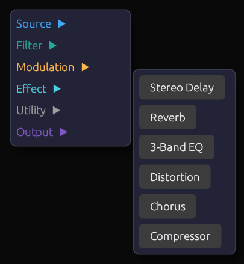

Interface Overview
Modular Synth uses a node-graph interface where modules are represented as nodes that can be connected together to create synthesizer patches.
 The main Modular Synth interface
The main Modular Synth interface
The Canvas
The main area of the interface is the node graph canvas. This is where you create and connect modules.
Navigation
| Action | Mouse | Keyboard |
|---|---|---|
| Pan | Middle-click drag | Arrow keys |
| Zoom | Scroll wheel | + / - |
| Fit to view | - | Home |
| Select module | Left-click | - |
| Multi-select | Shift + left-click | - |
| Box select | Left-click drag on empty space | - |
| Delete | - | Delete or Backspace |
Canvas Tips
- Double-click empty space to quickly add a module
- Use the scroll wheel to zoom in for detailed work or out for an overview
- Modules can be freely positioned anywhere on the canvas
Adding Modules
Context Menu
Right-click on empty canvas space to open the module browser:
 The module browser context menu
Modules are organized by category:
- Sources - Oscillators and sound generators
- Filters - Frequency shaping
- Modulation - Envelopes, LFOs, clocks
- Utilities - VCAs, mixers, signal processing
- Effects - Delays, reverbs, distortion
- MIDI - MIDI input and processing
- Visualization - Scopes and meters
- Output - Audio output
Click a module name to add it at the cursor position.
Quick Add
Double-click on empty canvas space to open a quick search box where you can type to filter modules by name.
Module Anatomy
Each module has a consistent structure:
 Parts of a module
Parts of a module
Header Bar
The colored bar at the top shows:
- Module name - The type of module
- Category color - Indicates the module's function category
Input Ports (Left Side)
Circular connectors on the left side receive signals from other modules:
- Port color indicates the expected signal type
- Port label describes what the input controls
- Hover over a port to see a tooltip with details
Output Ports (Right Side)
Circular connectors on the right side send signals to other modules:
- Port color indicates the signal type produced
- Multiple modules can connect to the same output
Parameter Knobs (Bottom)
Rotary knobs for adjusting module parameters:
- Drag vertically to adjust the value
- Double-click to reset to default
- Ctrl + click for fine adjustment
- Value readout shows the current setting
Exposed Parameters
Some parameters can be controlled both manually and via external signals. When an external signal is connected:
- The knob becomes read-only (dimmed appearance)
- The knob animates to show the incoming signal value
- An orange indicator shows external control is active
When disconnected, the knob returns to manual control.
Making Connections
Creating a Connection
- Click and hold on an output port (right side of a module)
- Drag to an input port (left side of another module)
- Release to complete the connection
 Dragging a connection from output to input
Dragging a connection from output to input
Connection Rules
- Outputs connect to inputs (never output-to-output or input-to-input)
- Signal types should match (Audio to Audio, Control to Control, etc.)
- Some inputs accept multiple signal types (automatic conversion)
- Multiple cables can connect to the same output
- Only one cable can connect to each input
Connection Colors
Cables are colored by signal type:
| Color | Signal Type |
|---|---|
| Blue | Audio |
| Orange | Control/CV |
| Green | Gate/Trigger |
| Purple | MIDI |
Removing Connections
- Right-click on a connection to delete it
- Click on an input port with an existing connection, then press
Escapeto disconnect - Delete a module to remove all its connections
Adjusting Parameters
Knob Interaction
 Adjusting a parameter knob
Adjusting a parameter knob
| Action | Result |
|---|---|
| Drag up/down | Adjust value |
| Ctrl + drag | Fine adjustment |
| Double-click | Reset to default |
| Right-click | Open value entry / MIDI learn |
Value Display
Below each knob is a value readout showing:
- The current numeric value
- The unit (Hz, ms, dB, etc.) where applicable
Patch Management
Saving Patches
| Action | Shortcut |
|---|---|
| Save | Ctrl + S |
| Save As | Ctrl + Shift + S |
Patches are saved as .json files containing all module settings and connections.
Loading Patches
| Action | Shortcut |
|---|---|
| Open | Ctrl + O |
| New | Ctrl + N |
Recent Patches
Access recently opened patches from the File menu.
MIDI Setup
Enabling MIDI Input
- Add a MIDI Note or Keyboard module to your patch
- The module will automatically receive input from connected MIDI devices
MIDI Learn
To assign a MIDI controller to a knob:
- Right-click the knob
- Select MIDI Learn
- Move the desired MIDI controller
- The knob is now mapped to that controller
Computer Keyboard
The Keyboard module allows playing notes using your computer keyboard:
- Z-M row: Lower octave (C3-B3)
- Q-P row: Upper octave (C4-B4)
- Number keys: Octave selection
Keyboard Shortcuts
General
| Shortcut | Action |
|---|---|
Ctrl + N | New patch |
Ctrl + O | Open patch |
Ctrl + S | Save patch |
Ctrl + Shift + S | Save patch as |
Ctrl + Z | Undo |
Ctrl + Y | Redo |
Delete | Delete selected |
Ctrl + A | Select all |
Escape | Deselect / Cancel |
Navigation
| Shortcut | Action |
|---|---|
Home | Fit all to view |
+ / - | Zoom in / out |
| Arrow keys | Pan canvas |
Modules
| Shortcut | Action |
|---|---|
Ctrl + D | Duplicate selected |
Ctrl + C | Copy selected |
Ctrl + V | Paste |
Next Steps
Now that you understand the interface:
- Your First Patch - Build a simple synthesizer step by step
- Signal Types - Understand the different signal types
- Module Reference - Explore all available modules